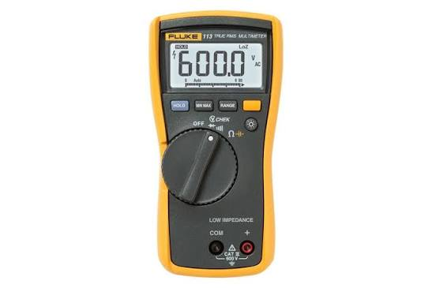
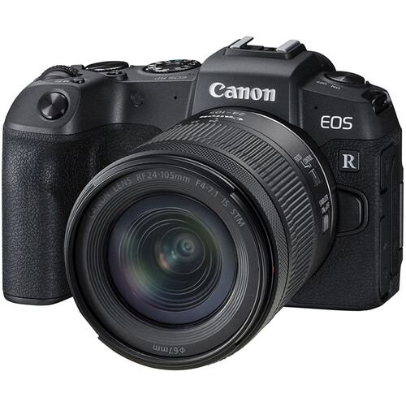

Katalog Peralatan
Peralatan yang dapat dipinjam
Multimeter Digital

Alat ukur tegangan, arus, dan resistansi.
Stok: 8 unit
Kondisi: Baik
Router
Perangkat jaringan untuk latihan routing dan konektivitas.
Stok: 12 unit
Kondisi: Baik
Kamera

Kamera digital untuk dokumentasi dan kebutuhan praktikum.
Stok: 5 unit
Kondisi: Baik